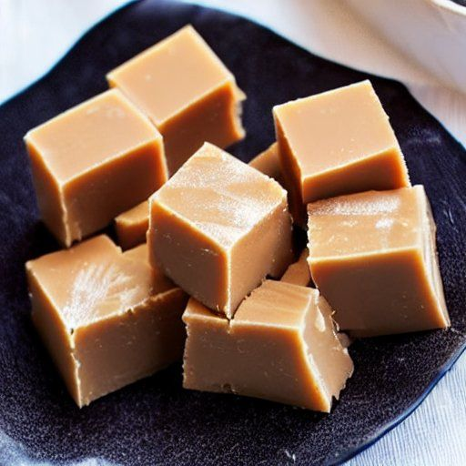

Sucre à la crème
Ingrédients
-
3 t sucre

-
3 t crème (15%)
-
1 c. à thé d'extrait de vanille
-
1 c. à thé de cacao
-
3/4 t de pablum
-
Un petit peu de beurre
Instructions
Faire bouillir le sucre et la crème jusqu'à ce qu'une boule se forme lorsqu'on dépose un peu du mélange dans l'eau froide (environ 2 heures). Retirer du feu.
- 3 t sucre
- 3 t crème (15%)
Ajouter la vanille, le cacao, le pablum et un petit peu de beurre.
- 1 c. à thé d'extrait de vanille
- 1 c. à thé de cacao
- 3/4 t de pablum
- Un petit peu de beurre
Brasser pendant 5 minutes pour faire prendre le mélange.